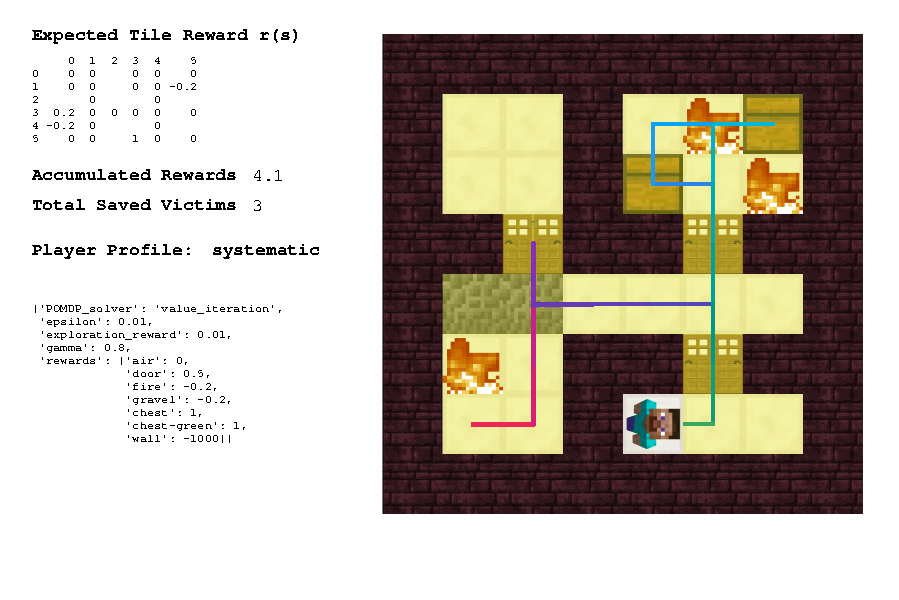

Set up the gridworld#
Folder tom-minecraft/gridworld/ includes most of the codes we use for inferring player planning model and predicting player actions through planning. It simplifies the Minecraft environment as a 2D gridworld, assuming that there will only be one object that the player interact with along the vertical axis.
Install Python dependencies#
First, you might need to install miniconda for setting up a Python virtual environment for this project.
At terminal, create a python 3.7 virtual environment and activate it when testing codes
(base) $ conda create --name mine python=3.7
(base) $ conda activate mine
(mine) $
Use conda deactivate for exiting from the environment.
Install required libraries#
(mine) $ conda install matplotlib imageio jupyter pandas numpy scipy Pillow tqdm networkx moviepy future opencv
(mine) $ conda install pytorch torchvision cpuonly -c pytorch
(mine) $ pip install nbtlib mkdocs
Refer to /gridworld/tutorials/ for some Jupyter Notebook examples of using numpy, matplotlib, and json libraries.
Run a test case#
Go to gridworld folder and run visualize.py, you should see the following Python Turtle window show up.
If you are using macOS 10.6 or later, your mac may lead you to the computer's log in page once you run the command. Solutions can be found here. (For me, downgrading to python 3.7.0 fixes the problem).
(mine) $ cd /YOUR_PATH_TO/tom-minecraft/gridworld
(mine) $ python visualize.py

Try out more test cases by following Planning test cases.
Troubleshooting#
tkinter on macOS 10.6#
If your python just crashes when you run visualize.py and your macOS version is 10.14.6 Mojave, you are experiencing a compatibility issue with your python version. The solutions can be found here. For Anna, downgrading to python from 3.7.7 to 3.7.0 fixed the problem.